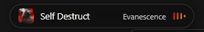
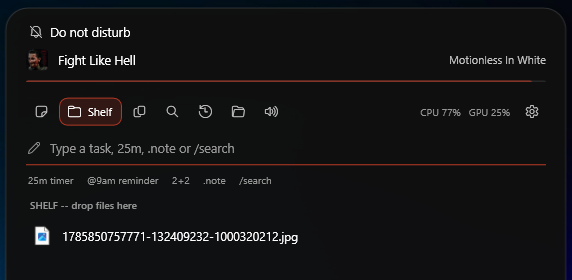
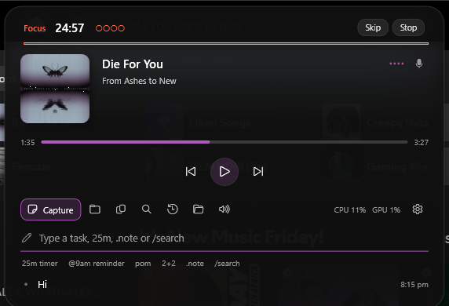
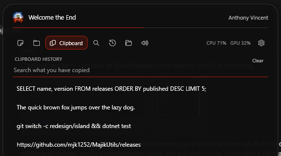
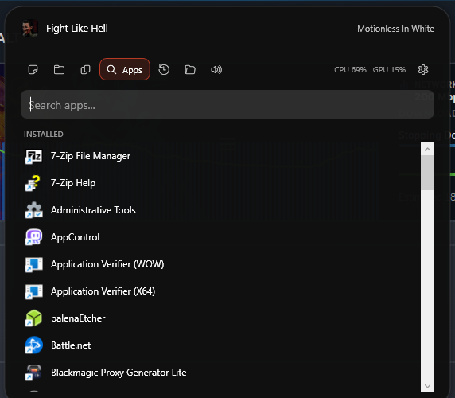

Windows 11 · WPF · open source
MajikUtils hangs a small island from it. Glance at it to see what is playing. Click it and it becomes the one place you type — a task, a timer, a sum, a search across everything your machine already knows.
There is no mode to pick and nothing to click first. A line under the box tells you what Enter is about to do, before you press it — so the grammar is something you notice rather than something you learn.
| You type | What happens |
|---|---|
renew the domain | A task, to tick off later. |
25m or 1h30 | A countdown, with a ring on the island. |
@9am call Tom | A countdown to nine, which says call Tom when it fires. |
23 * 1.2 | Shows 27.6. Enter copies it. |
pom | A focus cycle: 25 on, 5 off, a long break every fourth. |
.wifi is on the router | A note. |
/firefox | Searches apps, folder stacks, recent files and clipboard. |
@home buy milk is a task, because what
follows the at-sign is not a clock. buy 2 x 4 timber is a task, because the
calculator refuses anything it cannot read whole. A grammar that swallows a sentence is worse
than one that occasionally under-reads it.

pom starts the cycle and the island runs it: focus, a short break, a longer one
every fourth round, advancing on its own the whole way. Four dots fill as you earn them, so
the set reads at a glance without any arithmetic.

Text, images and copied files. A screenshot is the thing on that list you most cannot get back — take a second one and the first is gone — so images are held and shown as themselves, and drag straight out into whatever wants them.

The lit scope says its name; the rest stay out of the way as icons. Arrow keys and Enter work throughout, so a search never needs the mouse.
The box, and a feed of everything you have put through it.
Drag a file at the island and it opens ready to drop into.
Text, images and files, searchable and pinnable.
Everything installed, plus anything winget can fetch.
What you had open, without going to find it.
A folder fanned out from its own taskbar button.
Per-application volume, where the sound is coming from.

The island never takes focus until you ask it to, lets clicks pass straight through whenever its controls are not showing, and takes itself off screen when a game or a full-screen video owns the monitor. Pointing at it opens it. Clicking holds it open until you click away or press Esc.